A violin plot is a compact display of a continuous distribution. It is a
blend of geom_boxplot() and geom_density(): a
violin plot is a mirrored density plot displayed in the same way as a
boxplot.
geom_violin( mapping = NULL, data = NULL, stat = "ydensity", position = "dodge", ..., draw_quantiles = NULL, trim = TRUE, scale = "area", na.rm = FALSE, orientation = NA, show.legend = NA, inherit.aes = TRUE ) stat_ydensity( mapping = NULL, data = NULL, geom = "violin", position = "dodge", ..., bw = "nrd0", adjust = 1, kernel = "gaussian", trim = TRUE, scale = "area", na.rm = FALSE, orientation = NA, show.legend = NA, inherit.aes = TRUE )
| mapping | Set of aesthetic mappings created by |
|---|---|
| data | The data to be displayed in this layer. There are three options: If A A |
| position | Position adjustment, either as a string, or the result of a call to a position adjustment function. |
| ... | Other arguments passed on to |
| draw_quantiles | If |
| trim | If |
| scale | if "area" (default), all violins have the same area (before trimming the tails). If "count", areas are scaled proportionally to the number of observations. If "width", all violins have the same maximum width. |
| na.rm | If |
| orientation | The orientation of the layer. The default ( |
| show.legend | logical. Should this layer be included in the legends?
|
| inherit.aes | If |
| geom, stat | Use to override the default connection between
|
| bw | The smoothing bandwidth to be used.
If numeric, the standard deviation of the smoothing kernel.
If character, a rule to choose the bandwidth, as listed in
|
| adjust | A multiplicate bandwidth adjustment. This makes it possible
to adjust the bandwidth while still using the a bandwidth estimator.
For example, |
| kernel | Kernel. See list of available kernels in |
This geom treats each axis differently and, thus, can thus have two orientations. Often the orientation is easy to deduce from a combination of the given mappings and the types of positional scales in use. Thus, ggplot2 will by default try to guess which orientation the layer should have. Under rare circumstances, the orientation is ambiguous and guessing may fail. In that case the orientation can be specified directly using the orientation parameter, which can be either "x" or "y". The value gives the axis that the geom should run along, "x" being the default orientation you would expect for the geom.
geom_violin() understands the following aesthetics (required aesthetics are in bold):
x
y
alpha
colour
fill
group
linetype
size
weight
Learn more about setting these aesthetics in vignette("ggplot2-specs").
density estimate
density estimate, scaled to maximum of 1
density * number of points - probably useless for violin plots
density scaled for the violin plot, according to area, counts or to a constant maximum width
number of points
width of violin bounding box
Hintze, J. L., Nelson, R. D. (1998) Violin Plots: A Box Plot-Density Trace Synergism. The American Statistician 52, 181-184.
geom_violin() for examples, and stat_density()
for examples with data along the x axis.
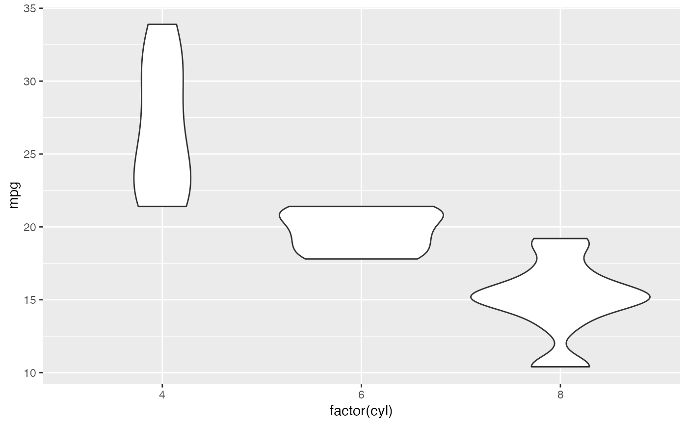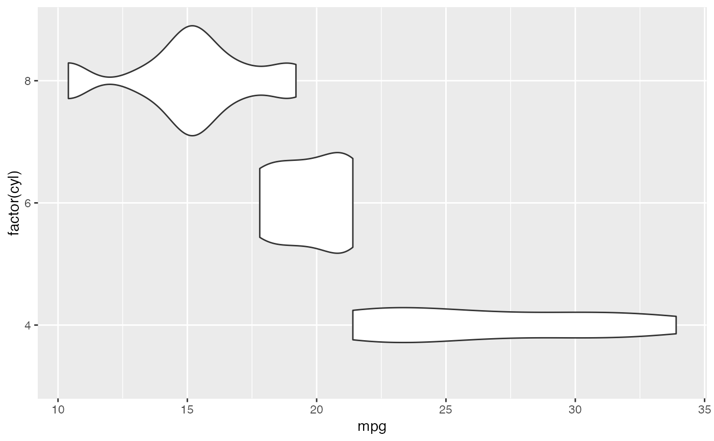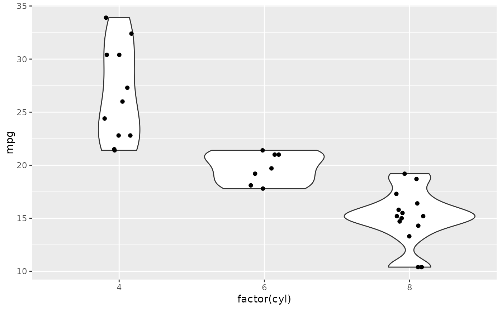# Scale maximum width proportional to sample size: p + geom_violin(scale = "count")# Scale maximum width to 1 for all violins: p + geom_violin(scale = "width")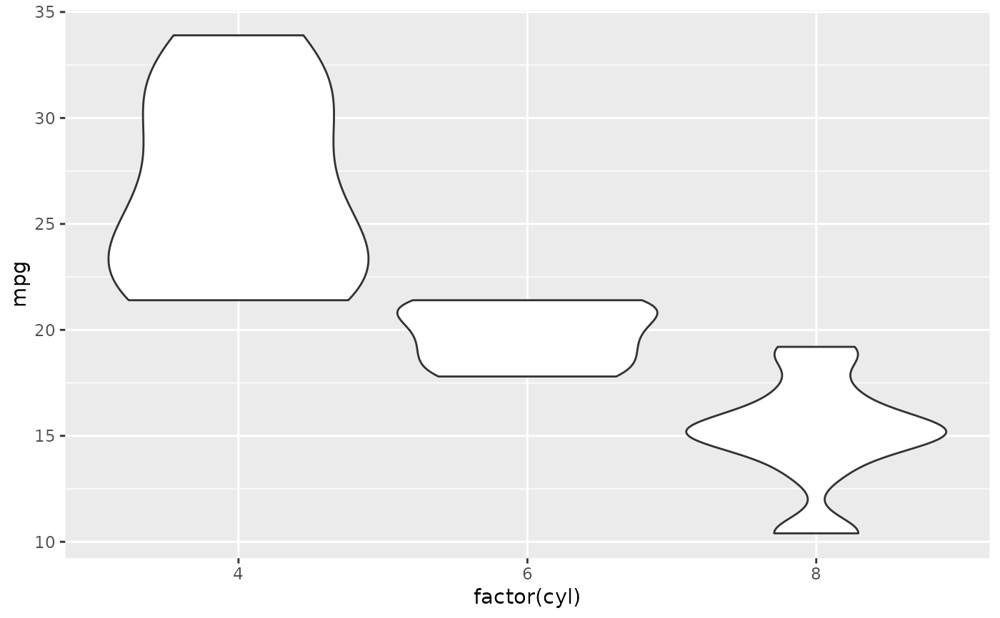# Default is to trim violins to the range of the data. To disable: p + geom_violin(trim = FALSE)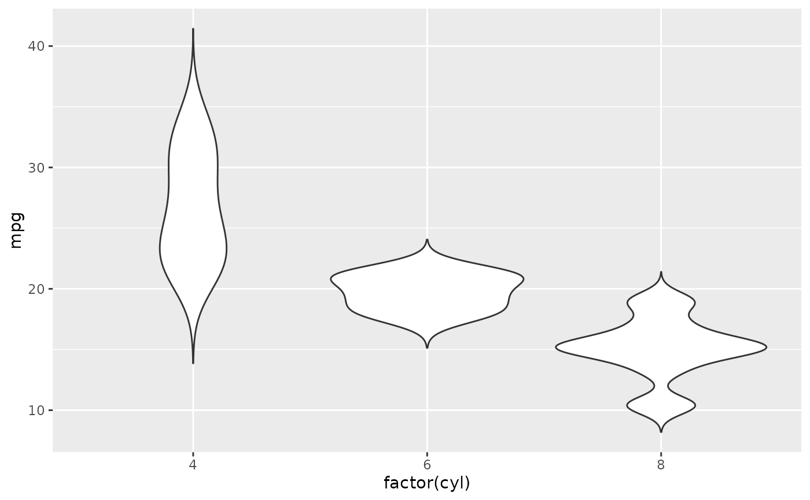# Use a smaller bandwidth for closer density fit (default is 1). p + geom_violin(adjust = .5)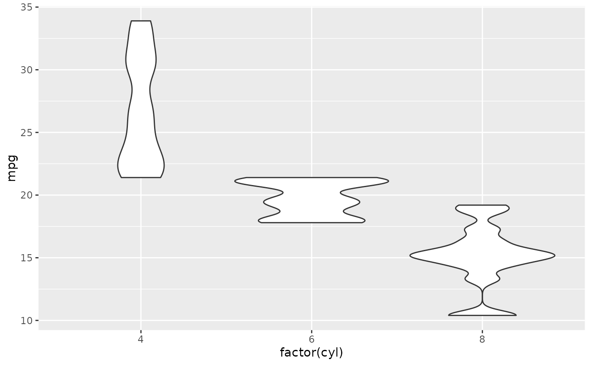# Add aesthetic mappings # Note that violins are automatically dodged when any aesthetic is # a factor p + geom_violin(aes(fill = cyl))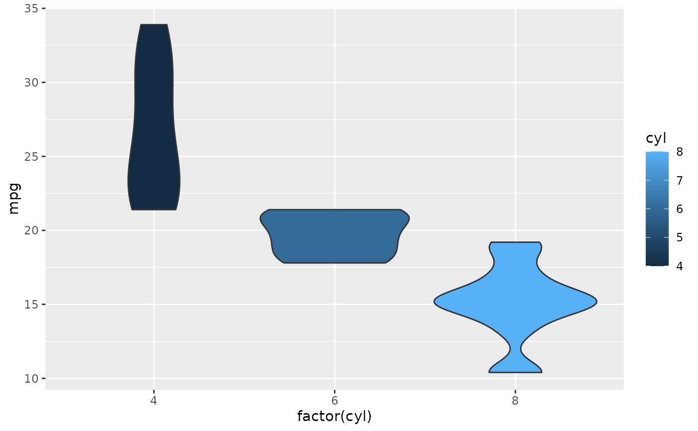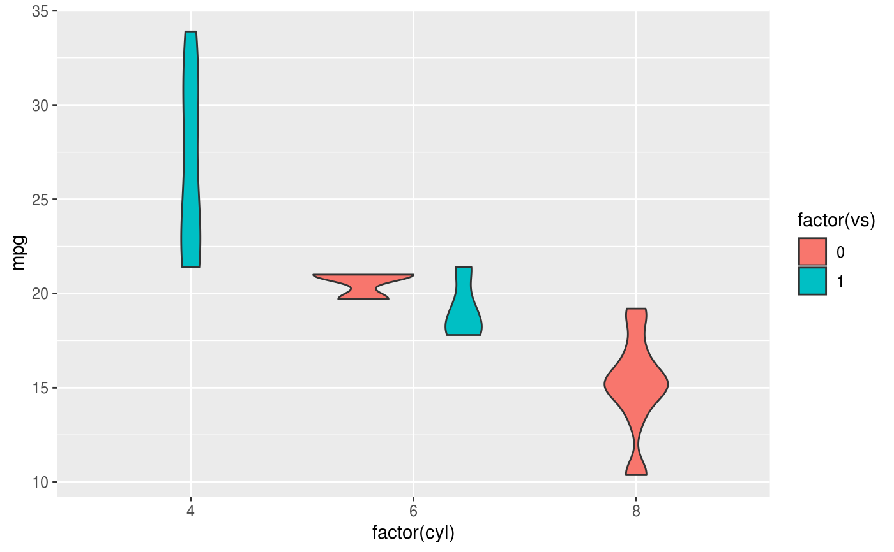#> Warning: Groups with fewer than two data points have been dropped.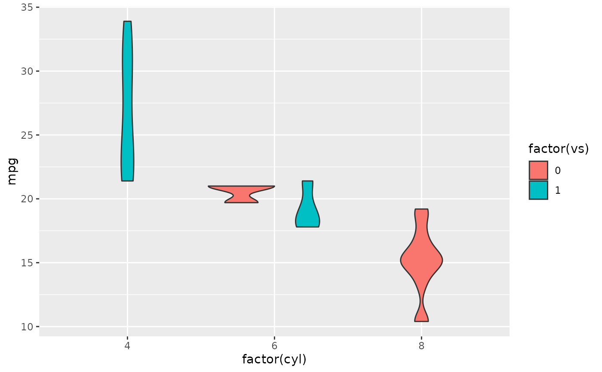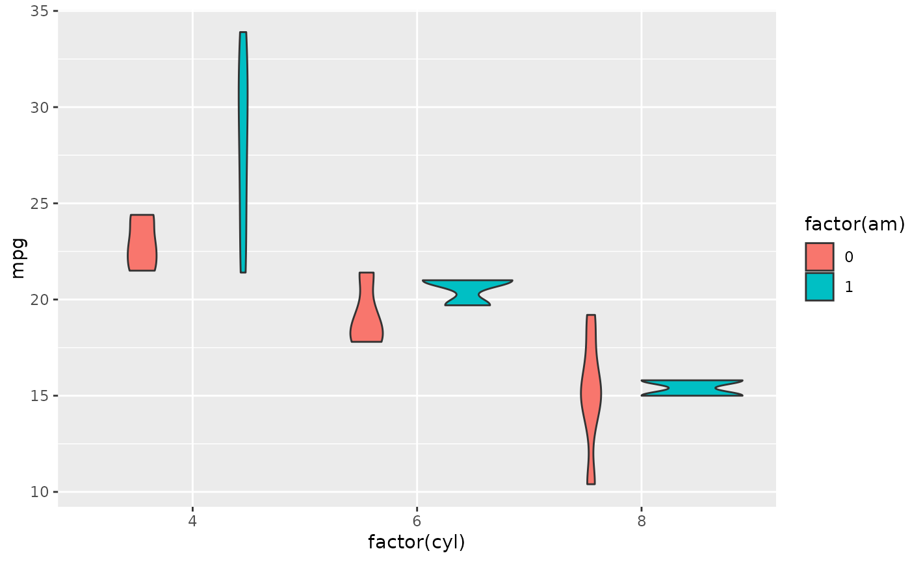# Set aesthetics to fixed value p + geom_violin(fill = "grey80", colour = "#3366FF")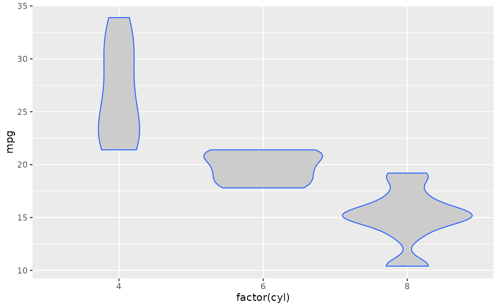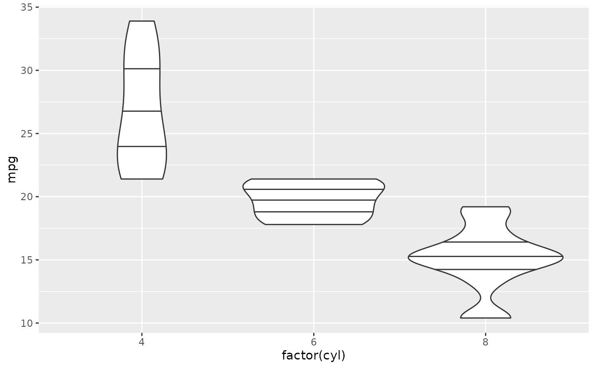# Scales vs. coordinate transforms ------- if (require("ggplot2movies")) { # Scale transformations occur before the density statistics are computed. # Coordinate transformations occur afterwards. Observe the effect on the # number of outliers. m <- ggplot(movies, aes(y = votes, x = rating, group = cut_width(rating, 0.5))) m + geom_violin() m + geom_violin() + scale_y_log10() m + geom_violin() + coord_trans(y = "log10") m + geom_violin() + scale_y_log10() + coord_trans(y = "log10") # Violin plots with continuous x: # Use the group aesthetic to group observations in violins ggplot(movies, aes(year, budget)) + geom_violin() ggplot(movies, aes(year, budget)) + geom_violin(aes(group = cut_width(year, 10)), scale = "width") }#> Warning: Removed 53573 rows containing non-finite values (stat_ydensity).#> Warning: Groups with fewer than two data points have been dropped.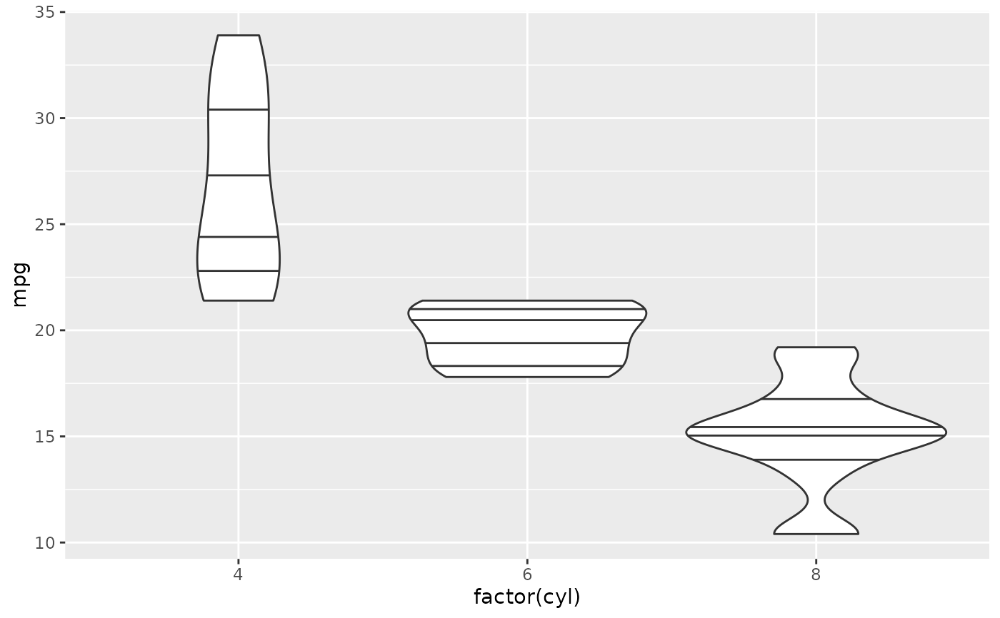# }